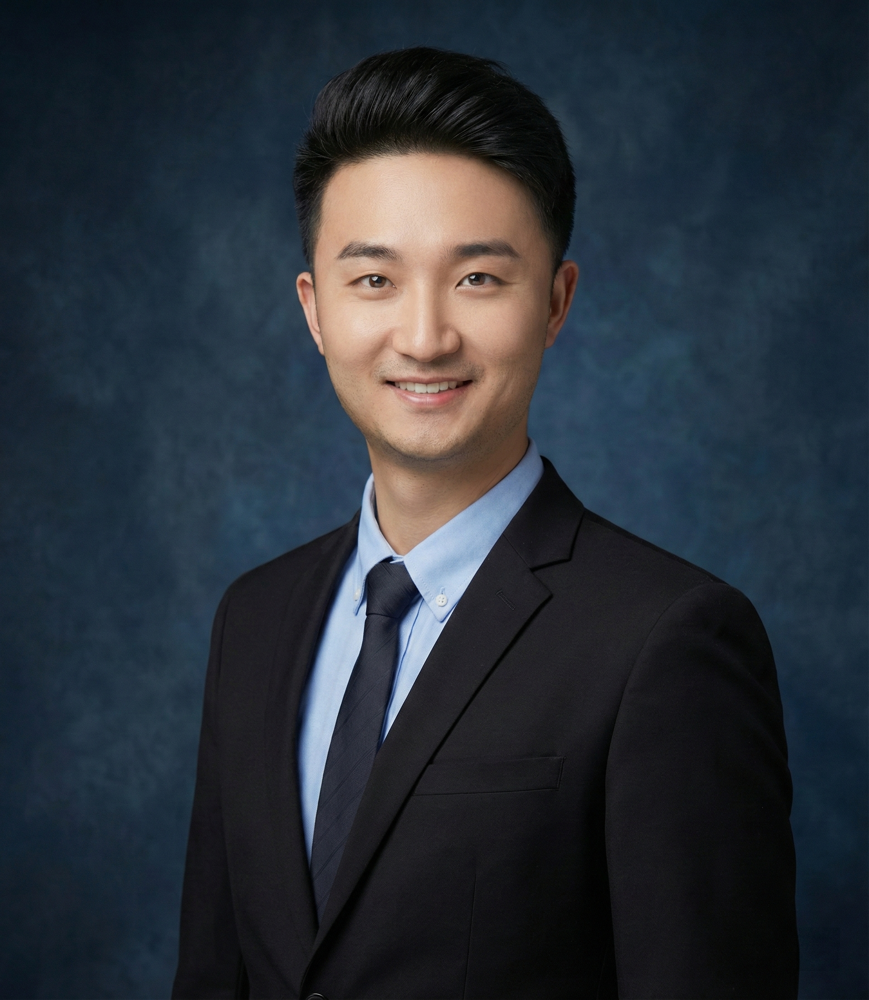

Zhuotao TianProfessorSchool of Computer Science Harbin Institute of Technology (Shenzhen) Shenzhen Loop Area Institute Shenzhen, China Email: tianzhuotao [at] gmail [dot] com 中文主页 (Chinese Homepage)
|
 |


Biography
I am looking for self-motivated PhD students (2026), postdoctoral researchers, and full-time RAs. If you are interested in working with me, please drop me an email with your resume.
Our current research interests and focus include scene understanding, multi-modal perception, large language models (LLMs), efficient learning, agentic learning and embodied AI.
Selected Publications [Google Scholar]
-
* indicates equal contribution; † indicates corresponding author.
-
SMD: Multi-view Safety-Critical Driving Video Generation in the Real-world Domain
Jiawei Zhou, Linye Lyu, Zhuotao Tian, Cheng Zhuo, Yu Li
International Conference on Machine Learning (ICML), 2026[Paper]
-
AgentSteerTTS: A Multi-Agent Closed-Loop Framework for Composite-Instruction Text-to-Speech
Bin Kang, Shaoguo Wen, Yang Fan, Shunlong Wu, Junjie Wang, Yulin Li, Junzhi Zhao, Junle Wang, Zhuotao Tian†
International Conference on Machine Learning (ICML), 2026[Paper]
-
DC-Leap: Training-Free Acceleration of dLLMs via Draft-Guided Contiguous Leaping Decoding
Yanhua Jiao, Tianyi Wu, Xiaoxi Sun, Yulin Li, Huiling Zhen, Libo Qin, Baotian Hu, Zhuotao Tian†, Min Zhang
International Conference on Machine Learning (ICML), 2026[Paper]
-
DyCon: Dynamic Reasoning via Evolving Contextual Modeling
Tengyao Tu, Yulin Li, Huiling Zhen, Libo Qin, Zhoujun Wei, Jinghua Piao, Zhuotao Tian†, Yong Li, Min Zhang
International Conference on Machine Learning (ICML), 2026[Paper]
-
Benchmarking and Evolving Reason-Reflect-Rectify for Reflective Visual Generation
Junjie Wang, Xinghua Lou, Xiangtai Li, Ye Tian, henKeyu C, Yulink Li, Bin ang, Guangcan Mai, Yanwei Li, Zhuotao Tian†, Liqiang Nie
International Conference on Machine Learning (ICML), 2026[Paper]
-
SemanticVLA: Semantic-Aligned Sparsification and Enhancement for Efficient Robotic Manipulation
Wei Li, Renshan Zhang, Rui Shao, Zhijian Fang, Kaiwen Zhou, Zhuotao Tian, Liqiang Nie
AAAI Conference on Artificial Intelligence (AAAI, Oral), 2026[Paper]
-
Beyond Binary Contrast: Modeling Continuous Skeleton Action Spaces with Transitional Anchors
Yingjie Feng, Yi Wang, Jiaze Wang, Anfeng Liu, Zhuotao Tian†
Computer Vision and Pattern Recognition Conference (CVPR), 2026[Paper]
-
VisionLeaf: Entropy-Guided Leaf-First Reasoning for Efficient and Accurate Think-with-Image
Haokun GUI, Senqiao Yang, Mingkang Zhu, Meng Chu, Sitong Wu, Changsheng Lu, Zihao Wang, Zhuotao Tian, Jiaya Jia
Computer Vision and Pattern Recognition Conference (CVPR), 2026[Paper]
-
UniRefiner: Teaching Pre-trained ViTs to Self-Dispose Dross via Contrastive Register
Congpei Qiu, Zhaoyu Hu, Wei Ke, Zhuotao Tian, Yanhao Wu, Tong Zhang
Computer Vision and Pattern Recognition Conference (CVPR), 2026[Paper]
-
Multimodal Dataset Distillation via Phased Teacher Models
Shengbin Guo, Hang Zhao, Senqiao Yang, Chenyang Jiang, Yuhang Cheng, Xiangru Peng, Rui Shao, Zhuotao Tian†
International Conference on Learning Representations (ICLR), 2026[Paper]
-
Dynamic-dLLM: Dynamic Cache-Budget and Adaptive Parallel Decoding for Training-Free Acceleration of Diffusion LLM
Tianyi Wu, Xiaoxi Sun, Yanhua Jiao, Yulin Li, Yixin Chen, Yun-Hao Cao, Yi-Qi Hu, Zhuotao Tian†
International Conference on Learning Representations (ICLR), 2026[Paper]
-
Efficient Reasoning with Balanced Thinking
Yulin Li, Tengyao Tu, Li Ding, Junjie Wang, Hui-Ling Zhen, Yixin Chen, Yong Li, Zhuotao Tian†
International Conference on Learning Representations (ICLR), 2026[Paper]
-
Uni-DPO: A Unified Paradigm for Dynamic Preference Optimization of LLMs
Shangpin Peng, Weinong Wang, Zhuotao Tian†, Senqiao Yang, Xing Wu, Haotian Xu, Chengquan Zhang, Takashi Isobe, Baotian Hu, Min Zhang
International Conference on Learning Representations (ICLR), 2026[Paper]
-
LongHorizonUI: A Unified Framework for Robust long-horizon Task Automation of GUI Agent
Bin Kang, Shaoguo Wen, Yifei Bi, Shunlong Wu, Xinbin Yuan, Rui Shao, Junle Wang, Zhuotao Tian†
International Conference on Learning Representations (ICLR), 2026[Paper]
-
Plug-and-Play Fidelity Optimization for Diffusion Transformer Acceleration via Cumulative Error Minimization
Tong Shao, Yusen Fu, Guoying Sun, Jingde Kong, Zhuotao Tian, Jingyong Su
International Conference on Learning Representations (ICLR), 2026[Paper]
-
PointRePar : SpatioTemporal Point Relation Parsing for Robust Category-Unified 3D Tracking
Juntao Liu, Zikun Zhou, Zhuotao Tian, Guangming Lu, Jun Yu, Wenjie Pei
International Conference on Learning Representations (ICLR), 2026[Paper]
-
Context-Aware Hierarchical Learning: A Two-Step Paradigm towards Safer LLMs
Tengyun Ma, Jiaqi Yao, Daojing He, Shihao Peng, YU LI, Shaohui Liu, Zhuotao Tian†
Conference on Neural Information Processing Systems (NeurIPS), 2025[Paper]
-
Less Is More, but Where? Dynamic Token Compression via LLM-Guided Keyframe Prior
Yulin Li, Haokun Gui, Ziyang Fan, Junjie Wang, Bin Kang, Bin Chen, Zhuotao Tian†
Conference on Neural Information Processing Systems (NeurIPS), 2025[Paper]
-
Concerto: Joint 2D-3D Self-Supervised Learning Emerges Spatial Representations
Yujia Zhang, Xiaoyang Wu, Yixing Lao, Chengyao Wang, Zhuotao Tian, Naiyan Wang, Hengshuang Zhao
Conference on Neural Information Processing Systems (NeurIPS), 2025[Paper]
-
Mitigating Object Hallucinations via Sentence-Level Early Intervention
Shangpin Peng, Senqiao Yang, Li Jiang, Zhuotao Tian†
IEEE International Conference on Computer Vision (ICCV), 2025.[Paper]
-
Enhancing Spatial Reasoning in Multimodal Large Language Models through Reasoning-based Segmentation
Zhenhua Ning, Zhuotao Tian*, Shaoshuai Shi, Daojing He, Guangming Lu, Wenjie Pei, Li Jiang
IEEE International Conference on Computer Vision (ICCV), 2025.[Paper]
-
Edit360: 2D Image Edits to 3D Assets from Any Angle
Junchao Huang, Xinting Hu, Zhuotao Tian, Shaoshuai Shi, Li Jiang
IEEE International Conference on Computer Vision (ICCV, Highlight), 2025.[Paper]
-
CalibCLIP: Contextual Calibration of Dominant Semantics for Text-Driven Image Retrieval
Bin Kang, Bin Chen, Junjie Wang, Yulin Li, Junzhi Zhao, Junle Wang, Zhuotao Tian†
ACM International Conference on Multimedia (ACM MM, Oral, Outstanding Paper Award), 2025.[Paper]
-
VisionZip: Longer is Better but Not Necessary in Vision Language Models
Senqiao Yang, Yukang Chen, Zhuotao Tian†, Chengyao Wang, Jingyao Li, Bei Yu, Jiaya Jia
IEEE Conference on Computer Vision and Pattern Recognition (CVPR), 2025.[Paper]
-
DeCLIP: Decoupled Learning for Open-Vocabulary Dense Perception
Junjie Wang, Bing Chen, Yulin Li, Bin Kang, Yichi Chen, Zhuotao Tian†
IEEE Conference on Computer Vision and Pattern Recognition (CVPR), 2025.[Paper]
-
Typicalness-Aware Learning for Failure Detection
Yijun Liu, Jiequan Cui, Zhuotao Tian†, Senqiao Yang, Qingdong He, Xiaoling Wang, Jingyong Su>
Conference on Neural Information Processing Systems (NeurIPS), 2024[Paper]
-
Step-DPO: Step-wise Preference Optimization for Long-chain Reasoning of LLMs
Xin Lai, Zhuotao Tian, Yukang Chen, Senqiao Yang, Xiangru Peng, Jiaya Jia
arXiv preprint arXiv:2406.18629[Paper]
-
Scalable Language Model with Generalized Continual Learning
Bohao Peng, Zhuotao Tian†, Shu Liu, Mingchang Yang, Jiaya Jia
International Conference on Learning Representations (ICLR), 2024[Paper]
-
Unified Language-driven Zero-shot Domain Adaptation
Senqiao Yang, Zhuotao Tian†, Li Jiang, Jiaya Jia
IEEE Conference on Computer Vision and Pattern Recognition (CVPR), 2024[Paper]
-
LISA: Reasoning Segmentation via Large Language Model
Xin Lai, Zhuotao Tian†, Yukang Chen, Yanwei Li, Yuhui Yuan, Shu Liu, Jiaya Jia
IEEE Conference on Computer Vision and Pattern Recognition (CVPR, Oral), 2024[Paper]
-
LISA++: An Improved Baseline for Reasoning Segmentation with Large Language Model
Senqiao Yang, Tianyuan Qu, Xin Lai, Zhuotao Tian†, Bohao Peng, Shu Liu, Jiaya Jia
arXiv preprint arXiv: 2312.17240[Paper]
-
OA-CNNs: Omni-Adaptive Sparse CNNs for 3D Semantic Segmentation
Bohao Peng, Xiaoyang Wu, Li Jiang, Yukang Chen, Hengshuang Zhao, Zhuotao Tian, Jiaya Jia
IEEE Conference on Computer Vision and Pattern Recognition (CVPR), 2024[Paper]
-
Groupcontrast: Semantic-aware self-supervised representation learning for 3d understanding
Chengyao Wang, Li Jiang, Xiaoyang Wu, Zhuotao Tian, Bohao Peng, Hengshuang Zhao, Jiaya Jia
IEEE Conference on Computer Vision and Pattern Recognition (CVPR), 2024[Paper]
-
Towards Large-scale 3D Representation Learning with Multi-dataset Point Prompt Training
Sitong Wu, Haoru Tan, Zhuotao Tian, Yukang Chen, Xiaojuan Qi, Jiaya Jia
IEEE Conference on Computer Vision and Pattern Recognition (CVPR), 2024[Paper]
-
SaCo Loss: Sample-wise Affinity Consistency for Vision-Language Pre-training
Xiaoyang Wu, Zhuotao Tian, Xin Wen, Bohao Peng, Xihui Liu, Kaicheng Yu, Hengshuang Zhao
IEEE Conference on Computer Vision and Pattern Recognition (CVPR), 2024[Paper]
-
PFENet++: Boosting Few-shot Semantic Segmentation with the Noise-filtered Context-aware Prior Mask
Xiaoliu Luo, Zhuotao Tian*, Taiping Zhang, Bei Yu, Yuan Yan Tang, Jiaya Jia
IEEE Transactions on Pattern Analysis and Machine Intelligence (TPAMI), 2023[Paper]
-
Hierarchical Dense Correlation Distillation for Few-Shot Segmentation
Bohao Peng, Zhuotao Tian†, Xiaoyang Wu, Chenyao Wang, Shu Liu, Jingyong Su, Jiaya Jia
IEEE Conference on Computer Vision and Pattern Recognition (CVPR, Highlight), 2023[Paper]
-
Learning Context-aware Classifier for Semantic Segmentation
Zhuotao Tian, Jiequan Cui, Li Jiang, Xiaojuan Qi, Xin Lai, Yixin Chen, Shu Liu, Jiaya Jia
AAAI Conference on Artificial Intelligence (AAAI, Oral), 2023[Paper]
-
Generalized Parametric Contrastive Learning
Jiequan Cui, Zhisheng Zhong, Zhuotao Tian, Shu Liu, Bei Yu, Jiaya Jia
IEEE Transactions on Pattern Analysis and Machine Intelligence (TPAMI), 2023[Paper]
-
Adaptive Perspective Distillation for Semantic Segmentation
Zhuotao Tian, Pengguang Chen, Xin Lai, Li Jiang, Shu Liu, Hengshuang Zhao, Bei Yu, Ming-Chang Yang, Jiaya Jia
IEEE Transactions on Pattern Analysis and Machine Intelligence (TPAMI), 2023[Paper]
-
Prior Guided Feature Enrichment Network for Few-Shot Segmentation
Zhuotao Tian, Hengshuang Zhao, Michelle Shu, Zhicheng Yang, Ruiyu Li, Jiaya Jia
IEEE Transactions on Pattern Analysis and Machine Intelligence (TPAMI), 2022[Paper]
-
Generalized Few-Shot Semantic Segmentation
Zhuotao Tian, Xin Lai, Li Jiang, Shu Liu, Michelle Shu, Hengshuang Zhao, Jiaya Jia
IEEE Conference on Computer Vision and Pattern Recognition (CVPR), 2022[Paper]
-
Guided Point Contrastive Learning for Semi-supervised Point Cloud Semantic Segmentation
Li Jiang, Shaoshuai Shi, Zhuotao Tian, Xin Lai, Shu Liu, Chi-Wing Fu, Jiaya Jia
IEEE International Conference on Computer Vision (ICCV), 2021.[Paper]
-
Semi-supervised Semantic Segmentation with Directional Context-aware Consistency
Xin Lai, Zhuotao Tian* Li Jiang, Shu Liu, Hengshuang Zhao, Liwei Wang, Jiaya Jia
IEEE Conference on Computer Vision and Pattern Recognition (CVPR), 2021[Paper]
-
Homomorphic Latent Space Interpolation for Unpaired Image-To-Image Translation
Ying-Cong Chen, Xiaogang Xu, Zhuotao Tian, Jiaya Jia
IEEE Conference on Computer Vision and Pattern Recognition (CVPR, Oral), 2019[Paper]
-
Learning Shape-Aware Embedding for Scene Text Detection
Zhuotao Tian, Michelle Shu, Pengyuan Lyu, Ruiyu Li, Chao Zhou, Xiaoyong Shen, Jiaya Jia
IEEE Conference on Computer Vision and Pattern Recognition (CVPR), 2019[Paper]
Professional Activities
- Area Chair (AC) /Senior Program Committee (SPC):
IEEE/CVF Conference on Computer Vision and Pattern Recognition (CVPR).
Conference on Neural Information Processing Systems (NeurIPS).
International Conference on Learning Representations (ICLR).
IEEE/CVF Winter Conference on Applications of Computer Vision (WACV).
AAAI Conference on Artificial Intelligence (AAAI).
- Associate Editor (AE):
Pattern Recognition (PR).
- Conference Reviewer/Program Committee:
IEEE Conference on Computer Vision and Pattern Recognition (CVPR).
IEEE International Conference on Computer Vision (ICCV).
European Conference on Computer Vision (ECCV).
Neural Information Processing Systems (NeurIPS).
International Conference on Learning Representations (ICLR).
International Conference on Machine Learning (ICML).
- Journal Reviewer:
IEEE Transactions on Pattern Analysis and Machine Intelligence (TPAMI).
International Journal of Computer Vision (IJCV).
IEEE Transactions on Image Processing (TIP).
Teaching
- Course List:
ENGG 1100: Problem Solving by Programming ENGG 1110: Introduction to Engineering Design ENGG 2760: Probability for Engineers ENGG 5104: Image Processing and Computer Vision